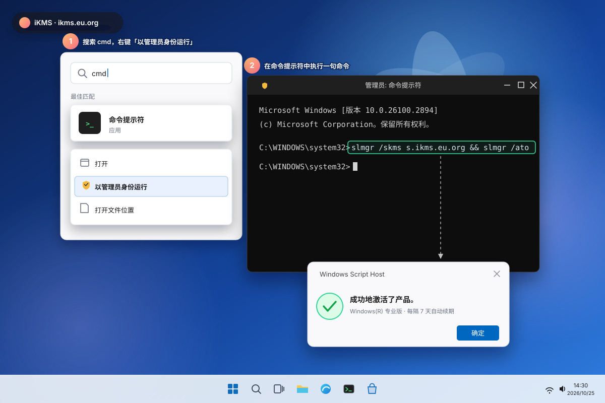
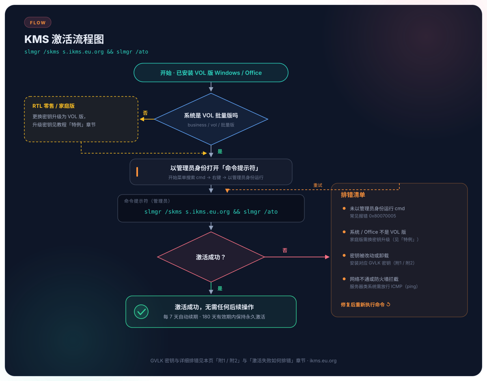

激活操作激活演示
Windows 11 一句命令激活的完整操作演示与流程图，照着做即可完成激活。

① 开始菜单搜索 cmd，右键「以管理员身份运行」→ ② 执行命令 → ③ 弹出激活成功提示

主流程一步到位；激活失败时按右侧排错清单逐项检查，修复后重新执行命令即可
Windows 11 一句命令激活的完整操作演示与流程图，照着做即可完成激活。

① 开始菜单搜索 cmd，右键「以管理员身份运行」→ ② 执行命令 → ③ 弹出激活成功提示

主流程一步到位；激活失败时按右侧排错清单逐项检查，修复后重新执行命令即可